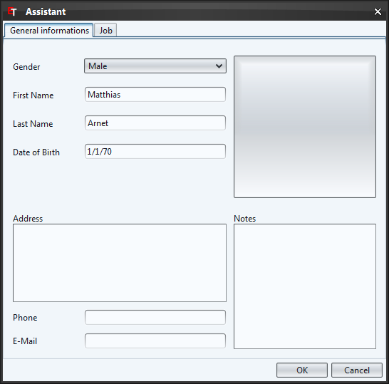
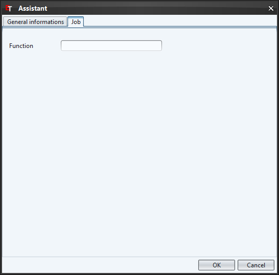

To choose the picture of the assistant, you have to click on the quadratic button on the upper right side and choose the corresponding file.
If you like to delete the picture, do a click with the right mouse button on the picture and select the entry "Reset image" in the context menu.

Function (e.g. Goal judge)